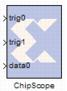

|
|
The Xilinx ChipScope™ block enables run-time debugging and verification of signals within an FPGA.Deep capture memory and multiple trigger options are provided. Data is captured based on user defined trigger conditions and stored in internal block memory.The Xilinx ChipScope block can be accessed at run-time using the ChipScope Pro Analyzer software. The Analyzer is used to configure the FPGA, setup trigger conditions and view the captured data at run-time. All control and data transfer is done via the JTAG port, eliminating the need to drive data off-chip using I/O pins. Data can be exported from the Analyzer and read back into the MATLAB workspace.The ChipScope™ Pro software (refer to Software Prerequisites topic to obtain information on software to be installed to use this block), a download cable and a FPGA board with a JTAG connector are required. More information about purchasing ChipScope Pro can be found at http://www.xilinx.com/ise/optional_prod/cspro.htmThe ChipScope Pro Analyzer supports the following download cables for communication between the PC and devices in the JTAG Boundary Scan chain: